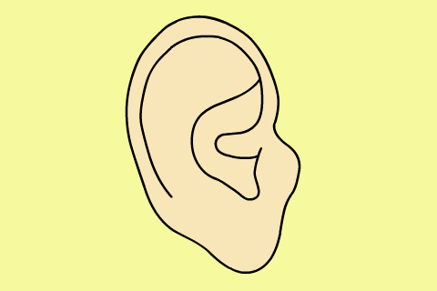
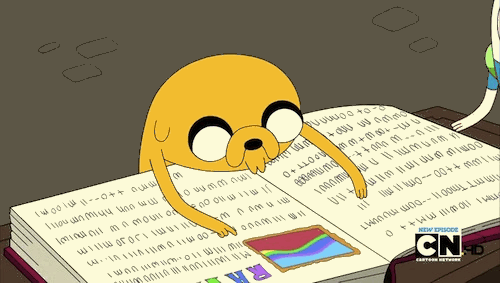

Good job! Now, it is your turn to strive hard for a 7.

LISTENING
The Listening test takes 30 minutes long (plus 10 minutes transfer time) and covers 4 separate recordings.
Section 1 is a conversation between two people set in an everyday context (e.g. a conversation in an accommodation agency).
Section 2 is a monologue set in an everyday social context (e.g. a speech about local families).
Section 3 is a conversation between up to four people set in an educational or training context (e.g. a university tutor and student discussing an assignment).
Section 4 is a monologue on an academic subject (e.g. a university lecture).
SPEAKING
B E Y O U R S E L F !
Because by being yourself, world will be so much beautiful
Speaking test takes 11-14 minutes.
The IELTS Speaking test is designed to assess a wide range of skills :
communicate opinions and information on everyday topics and common experiences; to do this you will need to answer a range of questions
speak at length on a given topic using appropriate language
organise your ideas coherently
express and justify your opinions
analyse, discuss and speculate about issues

READING
Reading test has 3 sections which takes 60 minutes long in total. Texts are taken from books, journals, magazines, and newspapers.
Task One is a multiple choice (A, B, C, D, or E).
Task Two is to identify the information given.
FALSE (the passage states the opposite of the statement in question)
NOT GIVEN (the statement is neither confirmed nor contradicted by the information in the passage)
Task Three is to identify writer's views.
NO (views of the writer explicitly disagree with the statement)
NOT GIVEN (the view is neither confirmed nor contradicted)
Task Four is to match the information provided. They may be asked to find: specific details, an example, a reason, a description, a comparison, a summary, an explanation.
WRITING
IELTS Writing test takes 60 minutes long. Spend 20 minutes on Task 1 and 40 minutes on Task 2. Write clearly, organise your ideas, and use a variation of vocabulary.
In Task One, you will be presented with a graph, table, chart or diagram. You will be asked to describe, summarise or explain the information in your own words. This might involve describing and explaining data, describing the stages of a process or how something works, or describing an object or event.
In Task Two, you will be asked to write an essay in response to a point of view, argument or problem. You should find the issues interesting and easy to understand.
Task One
IELTS recommends you spend no more than 20 minutes on Writing Task One. You should write
over 150 words.
Academic Writing Task One is a report on a chart (bar chart, line chart, pie chart, table, map, diagram/ process, etc.)
Tips and Tricks :
Task Achievement
Coherence and Cohesion
Lexical Resource(Vocabulary)
Grammatical Range and Accuracy
Task Two
To practice your writing skill on Writing Task Two, you need to learn about how to plan your essay, when to give your opinion, and how to write an introduction.
Tips and Tricks :
Task Response
Coherence and Cohesion
Lexical Resource (Vocabulary)
Grammatical Range and Accuracy
Remarks :
P A Y A T T E N T I O N !
all issues in the essay questions
write about the isssues rather than just the general topic
answer the essay questions with relevant main points
plan your supporting points so they don't go off the topic